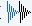
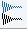
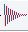
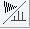
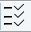
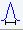

zg
NAME
zg - Perform an acquisition, overwriting possibly existing data
DESCRIPTION
The command zg performs an acquisition on the current dataset. A new data window will appear showing the currently acquired FID:
While an acquisition is running the buttons of the ACQU window have the following functions:
Show FID in shuffled mode.
 Show FID in unshuffled mode, horizontally arranged.
Show FID in unshuffled mode, vertically arranged.
Show FID in unshuffled mode, interleaved.
Switch between FID and spectrum.
Halt the acquisition [halt].
Stop the acquisition [stop].
The button toggles between FID and real time spectrum display and provides two extra buttons:
 Real time FT settings.
Clicking this button opens the following dialog window:
 Toggle calculation of peak with at 50%, 5.5% and 1.1% height. (Shown as status parameters)
The command zg performs the following sequence of actions:
- Read the acquisition parameters.
- Compile the pulse program defined by the acquisition parameter PULPROG.
- Execute the pulse program. For most pulse programs this involves:
- The acquisition of DS dummy scans.
- The acquisition of NS real scans, accumulating the data.
- Storing the accumulated data to disk.
- Update the acquisition status parameters
Acquisition Sequence
Before you can start an acquisition with zg, you will normally have to prepare the experiment. This typically involves the following command sequence:
- edprobe - define the current probe.
- edprosol - define the probe and solvent dependent parameters.
- new - define a new dataset and make it the current dataset.
- rpar - read a standard parameter set for the desired experiment.
- getprosol - get the probe and solvent dependent parameters.

- lockdisp - open the lock display window.
- lock - lock the magnetic field.
- wobb or atma - tune and match the probe (atma only for ATM probes).
- edasp - set up nuclei (NUC1, NUC2 etc.) and the spectrometer routing
- ased or eda - adjust the acquisition parameters to your needs.
- zg - acquire the data.
Pulse Program
The type of experiment is mainly determined by the pulse program. A simple 1D Bruker pulse program is zg, which contains the following lines:
1 ze ;zero memory, reset scan counter and phase lists,
;enable dummy scans, label 1
2 d1 ;relaxation delay with length D1, label 2
p1 ph1 ;pulse with length P1 and phase ph1
go=2 ph31 ;sample TD points with phase ph31, loop to 2
; times NS+DS
wr #0 ;write the data to the current dataset
exit ;end of the pulse program
ph1=0 2 2 0 1 3 3 1 ;phase program (list) used for the RF pulse
ph31=0 2 2 0 1 3 3 1 ;phase program (list) used for the receiver
The RF pulse p1 is executed on the default channel (f1) with the default power level (PL1). The loop to label 2 will be performed NS times to accumulate this number of scans. The wr statement lies outside of this loop which means the data are only written to disk once, at the end of the experiment.
Furthermore, an information window will appear showing the current scan, the total number of scans and the residual experiment time.
The purpose of dummy scans is to reach steady state conditions concerning T1 relaxation. This is necessary whenever the recycle delay of the experiment is shorter than 4 times the T1 value of the measured nucleus. Furthermore, dummy scans can be used to establish a stable temperature. This is especially important in decoupling experiments where the irradiation high power increases the sample temperature. The number of dummy scans is determined by the acquisition parameter DS. In the pulse program, the ze statement explicitly enables the go statement to perform dummy scans. In contrast, the zd statement disables the execution of dummy scans.
Transfer to Disk
In most 1D experiments, the acquired data are written to disk only once, at the end of the experiment. You can, however, use the command tr to write data to disk while the acquisition is running. This is, for example, useful if you want to do a Fourier transform and view the spectrum after a few scans. Another reason to use tr is to save the currently acquired scans of a long-term experiment. This avoids losing all data in case of a power loss. In multidimensional experiments, the wr statement is part of a loop, and is executed for each increment in the indirect direction(s).
Note that in many pulse programs the wr statement has been replaced by the mc statement which performs both the disk write and loop back function.
Multidimensional Data
zg allows you to perform 1D or multi-dimensional acquisition. The dimensionality of the data is determined by the pulse program. If this contains an if and/or st statement, zg assumes a 2D or 3D dataset. Furthermore, if the pulse program contains a nested loop with loop counters td1 and td2, zg assumes a 3D dataset. Finally, the acquisition parameter PARMODE is evaluated. If the value of PARMODE is not consistent with the pulse program, zg will display a warning but allow you to continue the acquisition. 1D data are stored a file named fid under the experiment number (expno) of the current dataset. 2D and 3D data are stored in a file named ser in the same directory. The pulse program is not limited to 3D and allows you to acquire data in 4 or more directions. TopSpin 2.0 and newer supports processing of nD data. Datasets up to dimension 5 have been tested by Bruker.
Stopping Acquisition
Normally, an acquisition will run until it has finished. If, however, you want to interrupt it, you can do that by clicking the button or entering the command halt. This will finish the current scan, write the data to disk and then stop the acquisition.
Note that halt finishes the current scan but not the current phase cycle.
Clicking the button or entering the command stop immediately stops the acquisition. It does not finish the current scan or write the data to disk. If, for some reason, halt and stop do not work, you can use the command kill to stop the acquisition.
When an acquisition has finished but the signal to noise is insufficient, you can accumulate additional scans. Just set the parameter NS to the number of extra scans and enter go. This command does not overwrite the existing data but adds the extra scans to them. Caution: go works correctly if the previous acquisition has finished normally but should not be used if this has been interrupted with halt or stop (see the description of go).
Preventing Data Overflow
1D raw data are, if necessary, stored as double precision (64-bit) data. If, based on the number of scans and the current accumulated signal, data overflow is expected to occur, data are transferred to the computer that controls the spectrometer, i.e. an automatic tr command is executed. Here the data are stored in 64-bit double precision format. The acquisition status parameter DTYPA shows whether data are stored as integers (DTYPA = int) or doubles (DTYPA = double).
Note that processed data are always stored as integer data.
Preventing Data Overwrite
zg overwrites possibly existing raw data. Each user can configure TopSpin to get a warning about existing data or not. Click on the Preferences icon | Acquisition and make sure that the entry Overwrite existing FID without inquiry (ZG safety off) is not checked.
Note the difference between zg and go. The latter command does not overwrite existing data but adds new data to them.
After a manually performed acquisition has finished, it is normally processed with processing commands like em, ft, apk etc. Processing commands are described in the Processing Reference Manual.
The command zg is automatically executed by AU programs that contain the ZG macro. Examples of these are au_zg*, au_getl* and multizg. Furthermore, zg is automatically executed when experiments are started from the automation interface IconNMR.
Note that an acquisition always runs in background which means that TopSpin can do other tasks simultaneously. You can change the focus to a different data window and process data there. This is actually what happens all the time during an automation sequence performed by IconNMR.
Pulse Programming
TopSpin is supplied with a large number of pulse programs from simple 1D to sophisticated multidimensional experiments. Furthermore, you can write your own pulse programs with the edpul command using the Bruker pulse programs as an example. For a detailed description of the pulse program syntax click:
Help | Manuals | Programming Manuals | Pulse Programming Manual
Python programs and pulse programs can be integrated. Python programs can calculate pulse program parameters such as delays, pulses, phases and shapes using Python, and generate or execute a pulse program by executing a Python program.
(cf . Help | Manuals | Programming Manuals | Pulse Programming With Python).
Command Spooling/Queuing
zg, like other acquisition commands, is automatically queued. This allows you to enter multiple zg commands, for example on different datasets. Queued commands can be viewed in the Spooling field of the acquisition status bar. Automatic command spooling as well as the display of the spooling field in the status bar can be enabled/disabled in the User Preferences (command set).
INPUT PARAMETERS
All acquisition parameters as described in chapter TopSpin Parameters of the Acquisition Reference Manual.
OUTPUT PARAMETERS
All acquisition status parameters as described in chapter TopSpin Parameters of the Acquisition Reference Manual.
INPUT FILES
1D Data
- <dir>/data/<user>/nmr/<name>/<expno>/
- acqu - acquisition parameters
2D Data
- <dir>/data/<user>/nmr/<name>/<expno>/
- acqu - acquisition parameters direct direction (F2)
- acqu2 - acquisition parameters indirect direction (F1)
3D Data
- <dir>/data/<user>/nmr/<name>/<expno>/
- acqu - acquisition parameters direct direction (F3)
- acqu2 - acquisition parameters indirect direction (F2)
- acqu3 - acquisition parameters indirect direction (F1)
All Data
- <tshome>/exp/stan/nmr/lists/ (primary source) or <dir>/data/<user>/nmr/<name>/<expno>/lists (fallback if not found in primary source)
- pp/<PULPROG> - the pulse program defined by PULPROG
- other list files (e.g. shapes, CPD programs as well as frequency, loopcounter, delay, or pulse lists) in their respective subfolders
- <tshome>/conf/instr/<curinst>/
- scon2 - spectrometer parameters (created with edscon)
OUTPUT FILES
1D Data
- <dir>/data/<user>/nmr/<name>/<expno>/
- fid - raw data
- acqus - acquisition status parameters
2D Data
- <dir>/data/<user>/nmr/<name>/<expno>/
- ser - raw data
- acqus - acquisition status parameters direct direction (F2)
- acqu2s - acquisition status parameters indirect direction (F1)
3D Data
- <dir>/data/<user>/nmr/<name>/<expno>/
- ser - raw data
- acqus - acquisition status parameters direct direction (F3)
- acqu2s - acquisition status parameters indirect direction (F2)
- acqu3s - acquisition status parameters indirect direction (F1)
All Data
- <dir>/data/<user>/nmr/<name>/<expno>/
- Pulseprogram.precomp - the precompiled pulse program
- audita.txt - acquisition audit trail
- scon2 - spectrometer parameters
- dslist - dataset list (output if a
wr #norwr##statement is used) - cag_par - rotation matrices for gradients used for imaging
- <dir>/data/<user>/nmr/<name>/<expno>/lists
- used list files (e.g. shapes, CPD programs as well as frequency, loopcounter, delay, or pulse lists) in their respective subfolders
USAGE IN AU PROGRAMS
- ZG
COMMAND LINE OPTIONS
-D <define> | set precompiler directive <define> |
-scaleByRg | divide the fid by the receiver gain |
-scaleByNs | divide the fid by the number of scans |
rgAdjust | adjust receiver gain during dummy scans |
interactive | allow parameter change during runtime of experiment |
o1calib | used for the O1 calibration experiment |
o1calib <stepsize> <rangesize> | calibration of O1 with specified stepsize and rangesize (both in Hz) |
-help | print help message |